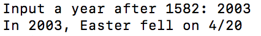
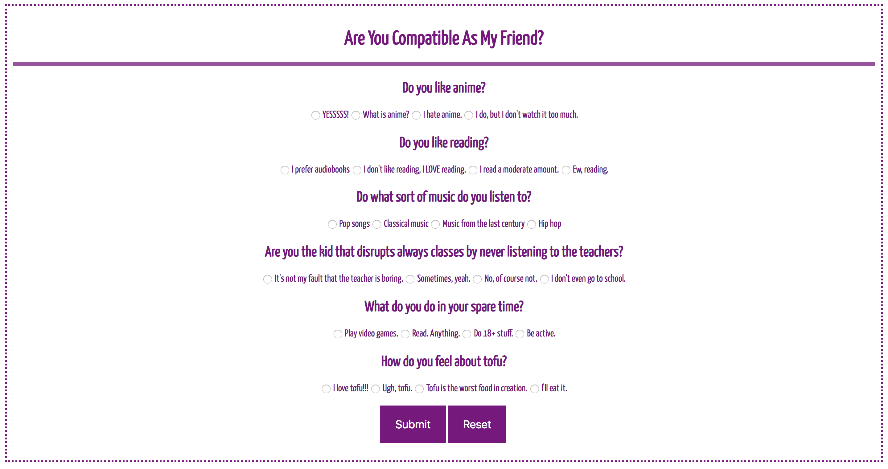

Projects
Fantasy Name Generator
This is the code for a fantasy name generator. With some user-given information, the program creates a whole new name for you!

Easter Day Predictor
This is the code for an Easter Day predictor. When given a year after 1582, the program can tell you the day that Easter will fall on in that year.
Personality Quiz
This is my coded personality quiz. It shows how likely a person is to be my friend, based on their preferences.
Fandom SiteThis is another website I made, where I show a more geekier side of me as I ramble about my favorite series.
It's not finished yet, and when the home page is updated, I'll attach a screenshot of it.
Here is a project that I am SERIOUSLY proud of! This is an NLP project that I coded with the help of my
Google mentor, Amelia Archer. It tells you whether a story is "positive" or "negative".
This project is features a robot car that can detect an obstacle and park parallel to said obstacle.
TVoNguyen18This is my Code Next GitHub, where you can see projects that I've done with Code Next.
ThanhNguyen428This is my main GitHub, where you can see even more projects that I've done.